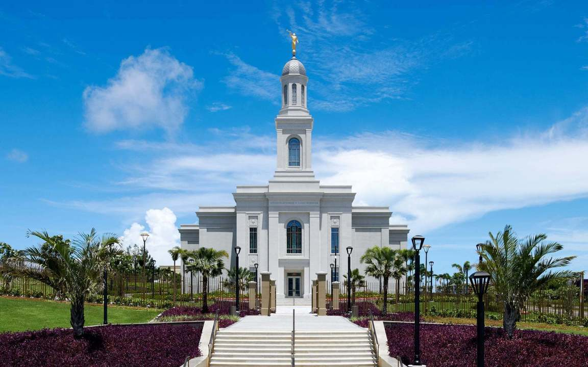

Temple Album
☰
Home
Old
New
Large
Small
Temple
My favorite temples
Fairbanks, Alaska temple

Fortaleza, Brazil temple
Paris, France temple
Preston, England temple
Quito, Ecuador temple
Rexburg, Idaho temple
Salt, Lake temple
Salta, Argentina temple
San salvador, El salvador temple